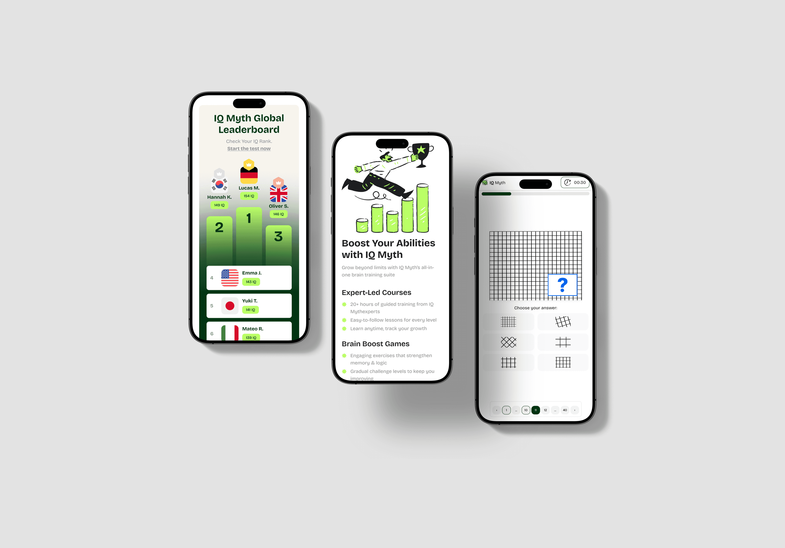
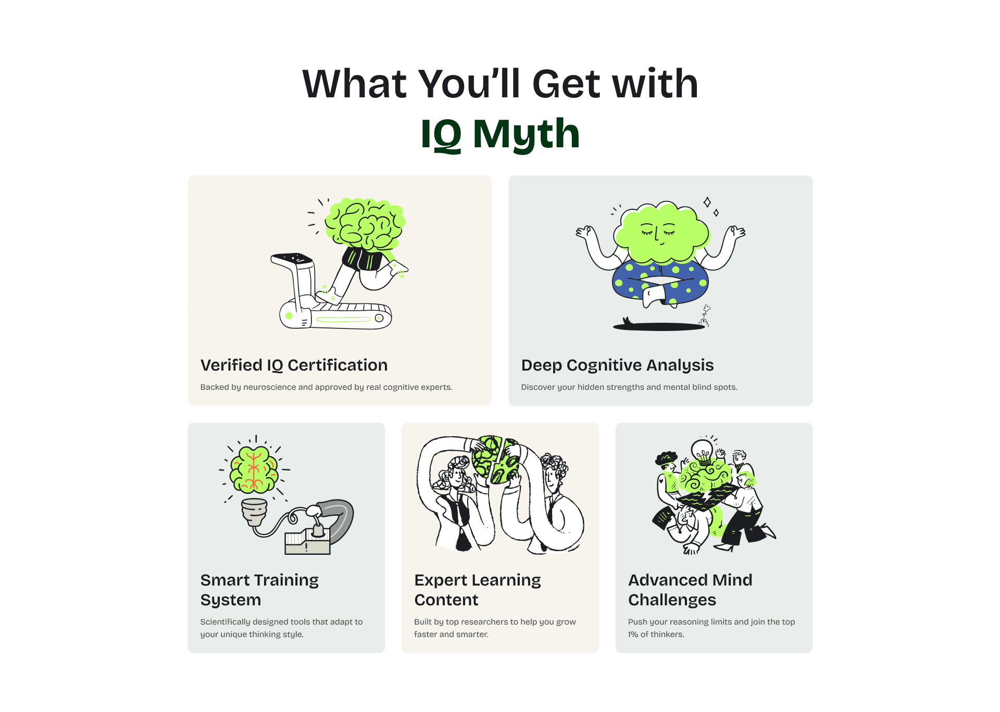

IQ MYTH — TRẢI NGHIỆM BÀI TEST TỪ LANDING ĐẾN KẾT QUẢ.
Dự án tập trung giảm những điểm gây phân tâm trước khi làm bài và làm rõ các bước sau khi người dùng hoàn thành bài kiểm tra.

SẢN PHẨM MỚI, CHƯA CÓ DESIGN SYSTEM KẾ THỪA
Tôi phụ trách trải nghiệm toàn diện từ trang giới thiệu (Landing Page), luồng làm bài test đến màn hình nhận kết quả và thanh toán. Khi phân tích các đối thủ cùng phân khúc như MyIQ, tôi nhận thấy CTA bắt đầu bài test khá rõ nhưng trang đích đồng thời nhồi nhét Testimonial, Bảng giá, Danh sách tính năng và FAQ.
[ GIẢ THUYẾT THIẾT KẾ ]
Lượng thông tin phụ trên trang giới thiệu có thể làm phân tán sự chú ý khỏi hành động bắt đầu bài kiểm tra. Đây là giả thuyết thiết kế; cần dữ liệu hành vi hoặc usability test để xác nhận mức độ ảnh hưởng.
 Ảnh phân tích cấu trúc đối thủ MyIQ
Ảnh phân tích cấu trúc đối thủ MyIQ
"Làm thế nào để người dùng bắt đầu bài kiểm tra nhanh, duy trì sự tập trung và hiểu rõ nội dung họ nhận được trước khi thanh toán?"
| [ TIÊU CHÍ ] | [ MYIQ (ĐỐI THỦ) ] | [ IQ MYTH (MỤC TIÊU) ] |
|---|---|---|
| Điểm mạnh | CTA nổi bật ở Hero, có social proof, pricing rõ ràng. | Tối giản, one-task-per-screen, dẫn dắt mượt mà vào test. |
| Điểm yếu | Layout rối, quá nhiều thông tin cùng lúc, không tạo được sự tập trung. | Cần xây dựng hoàn toàn mới từ đầu, chưa có dữ liệu quá khứ. |
BA NHẬN ĐỊNH BAN ĐẦU
Bắt Đầu Bài Test Ngay
Người truy cập trang có thể muốn bắt đầu bài kiểm tra ngay. Các nội dung bổ trợ nên được sắp xếp để không cạnh tranh với CTA chính.
Xem Kỹ Điểm Chạm Nhạy Cảm
Thu thập email và giới thiệu gói trả phí là những bước có khả năng tạo thêm do dự. Tôi dành nhiều thời gian hơn cho thứ tự thông tin và cách diễn đạt tại đây.
Phù Hợp Chủ Đề Khoa Học & Giải Trí
Hệ thống hình ảnh được xây theo hướng rõ ràng và hiện đại, đồng thời tránh tạo cảm giác quá nặng nề cho một bài kiểm tra mang tính giải trí.
Tôi xác lập màu sắc, typography và các component cốt lõi trong khi phát triển luồng chính. Những pattern được lặp lại mới được bổ sung vào hệ thống để giữ tính nhất quán mà không mở rộng quá sớm.
USER FLOW TỐI GIẢN (DƯỚI 2 BƯỚC)
Luồng được thiết kế để đưa người dùng từ trang đích đến bài kiểm tra trong ít hơn 2 bước.

COLOR SYSTEM
Xanh neon (#B9FF06) tạo điểm nhấn và nhận diện cho hình minh họa. Xanh đậm (#013613) được dùng cho CTA và nền để tạo độ tương phản và giữ tính tiếp cận.
Illustrations, Highlight text, bứt phá năng lượng
Nút CTA, nền footer; hỗ trợ độ tương phản
Cảnh báo kết quả hết hạn
Card background, Input field, nền làm bài test
TYPOGRAPHY — BRICOLAGE GROTESQUE
Bricolage Grotesque được chọn nhờ đường nét sắc nét nhưng gần gũi, phù hợp với hướng hình ảnh hiện đại của bài kiểm tra.
A single font throughout the system reduces cognitive load and maintains consistency.
04. Các quyết định UI chính
Hero Section
Hero sử dụng một câu thách thức ngắn và một CTA chính. Khoảng trắng và thứ bậc thị giác giúp làm rõ điểm bắt đầu bài kiểm tra.
Màn hình bài test
Mỗi màn hình hiển thị một câu hỏi và loại bỏ các thành phần điều hướng không cần thiết. Cách bố trí này nhằm giúp người dùng tập trung vào tác vụ hiện tại.
Thu thập Email — Giải thích quá trình xử lý và thời điểm nhận kết quả
Sau bài test, thiết kế sử dụng Labor Illusion qua animation phân tích và FOMO qua cảnh báo kết quả hết hạn, tiếp theo là Social Proof trước bước nhập email. Tác động đến mức độ tin tưởng và chuyển đổi cần được kiểm chứng.

Mobile-first & Leaderboard
Mobile được ưu tiên vì bài kiểm tra cần dễ sử dụng trên màn hình nhỏ. Layout dọc giữ câu hỏi và lựa chọn trong vùng đọc thuận tiện; leaderboard được rút gọn để tránh làm trang trở nên chật chội.
Minh họa
Bộ minh họa đen trắng kết hợp xanh neon tạo nhận diện riêng cho sản phẩm. Hình ảnh có sắc thái nhẹ nhàng để cân bằng cảm giác căng thẳng mà một số người có thể gặp khi làm bài kiểm tra.

Phiên bản đầu đặt ba gói cước ngang hàng, khiến người dùng phải so sánh nhiều thông tin ngay sau khi hoàn thành bài kiểm tra.

Phiên bản mới làm nổi bật gói cơ bản nhưng vẫn cho phép người dùng xem và so sánh các lựa chọn khác. Giá, quyền lợi và điều kiện thanh toán được trình bày ngay tại điểm quyết định.

KIỂM CHỨNG TRƯỚC KHI KẾT LUẬN
Cần theo dõi tỷ lệ tiếp tục, tỷ lệ quay lại so sánh gói và phản hồi về mức độ rõ ràng trước khi kết luận phương án mới hiệu quả hơn.
TÁCH RÕ DỮ LIỆU QUAN SÁT KHỎI GIẢ ĐỊNH THIẾT KẾ
Việc phân tích đối thủ giúp tôi nhận ra các pattern quen thuộc của thị trường và xác định điểm cần thử nghiệm trong IQ Myth. Bài học quan trọng nhất là tách rõ điều đã quan sát được khỏi giả định của người thiết kế, sau đó dùng thử nghiệm để kiểm tra giả định đó.